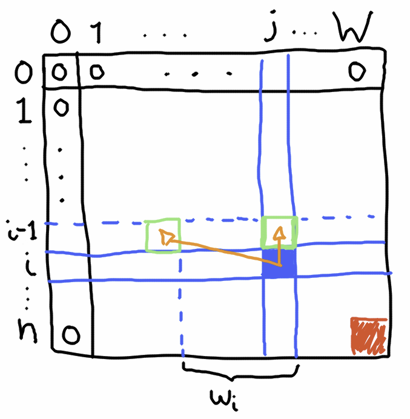
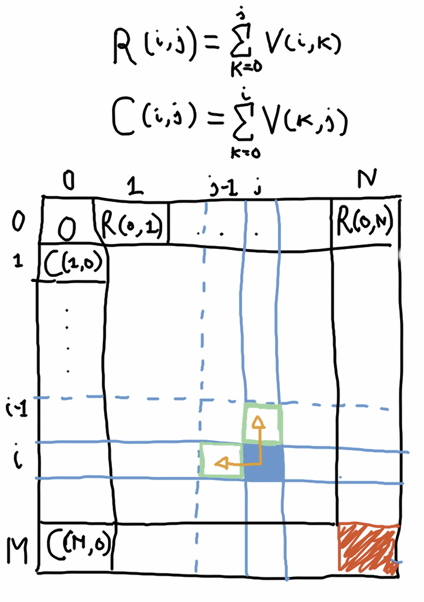

Solving Dynamic Programming problems using Functional Programming
Dynamic programming (DP) is “a technique used to solve innately inefficient recursive problems by storing solutions to pre-computed subproblems” (This definition is taken from James Katz’s workshop that he did at RC).
The idea of Dynamic Programming is to break a problem into smaller subproblems and save the result of each subproblem so that it is only calculated once. Dynamic programming involves two parts: restating the problem in terms of overlapping subproblems and saving the solution of the subproblems so that we can build the solution to the bigger problem.
Overlapping subproblems are subproblems that may have the same dependencies. DP helps us here because we want to compute these common dependencies just once. There are two usual approaches:
- The top-down approach starts trying to solve the bigger problem and uses memoization.
- The bottom-up approach starts with the subproblems to build up the solution to the bigger problem and uses some data structure to save the subproblems solutions.
If you want to learn more about dynamic programming you can look into some of these resources:
- The Wikipedia page on DP is actually very comprehensive.
- The second part of Stanford’s Algorithm’s course has a section on DP.
- This chapter of Dasgupta, Papadimitriou & Vazirani’s “Algorithms”.
In my opinion the best way to understand Dynamic Programming is by looking at multiple examples. The first usual example is the Fibonacci sequence but I think that’s a bad instance of the general idea because nobody would call Dynamic Programming the “technique” of storing the two last solutions in two variables. But in more complex examples you will be able to see the “pattern”.
This post is not so much an introduction to DP. As you will see it’s more about how to implement DP algorithms in a functional way when taking the bottom-up approach.
The imperative perspective
Dynamic programming problems, when solved in a bottom-up fashion, usually rely in some mutable data structure which holds the solutions for smaller subproblems. For example let’s explore the 0/1 knapsack problem. This and this are good videos about it and describe a solution. Here’s my summary of the problem:
Given n items indexed 1, 2, ⋯, n with values vi and weights wi find a subset of them with maximum total value that doesn’t exceed the input weight W. Each item may be included just once.
For example:
$$
\begin{array}{c|lcccr}
i & 1 & 2 & 3 & 4 & 5 \\
\hline
\text{Weight (kg)} & 1 & 2 & 4 & 2 & 3 \\
\text{Value (\$)} & 3 & 3 & 5 & 3 & 7
\end{array}
$$
and maximum target weight W = 9.
You can select the items 3, 4 and 5 for a total weight of 9 and a total value of 15. This is good but you could do even better by selecting items 1, 2, 4 and 5. In this case we would get a total value of 16 which is in fact the maximum you can get without exceeding the maximum weight of 9.
To solve this problem in the general case we can first break it by considering subsets. Let’s start with a definition that allows us to express subsets of the problem:
$$
M(i,j) = \begin{array}{ll}
\text{Maximum total value we can get when considering} & \\
\text{the first } i \text{ items with a maximum weight of }j &
\end{array}
$$
For each item we can have two choices: either we include it and gain it’s value but we have reduced our available weight. Or, on the other hand, we ignore it and never use it. These two possibilities totally exclude each other so if we compute the maximum between them for every item (and for every possible maximum weight < = W) then we can get the overall maximum. And these two possibilities correspond to two subproblem definitions.
The recursive formula that express this is:
$$
M(i,j) = Max\left\{ \begin{array}{ll}
M(i-1,j-w_i) + v_i & \text{Include the i-th item (possible when } j \geq w_i \text{ )} \\
M(i-1,j) & \text{Ignore the i-th item} \end{array} \right\}
$$
According to this formula we can see that the problem (i, j) depends on two subproblems: (i − 1, j − wi) and (i − 1, j)
Here’s a diagram that describes the subproblem dependencies:

The blue square represents a subproblem we are trying to solve. It depends on two other subproblems (the ones pointed by the arrows). And the final answer is the red square at the lower-right corner (the value M(n, W)). It represents the solution when we consider all the elements and with the problem’s input weight. We can also see the “base” cases here: when considering no item the maximum value we can produce is 0 and the same happens when the maximum weight is 0 (this assumes all wi > 0).
Drawing this kind of diagrams can be useful because it helps us to determine the shape of the iterations. In this case an element of a row depends on the values of the previous row. Thus we can build up solutions going down one row at a time.
A traditional imperative solution can be:
def knapsack(maxWeight: Int, value: Vector[Int], weight: Vector[Int]): Int = {
val n = value.length
val solutions: Array[Array[Int]] = Array.fill(n+1, maxWeight + 1)( 0 )
(1 to n) foreach { i =>
(1 to maxWeight) foreach { j =>
solutions(i)(j) = if( j - weight(i-1) >= 0 ) {
Math.max(
solutions(i-1)(j) ,
solutions(i-1)(j - weight(i-1)) + value(i-1)
)
} else {
solutions(i-1)(j)
}
}
}
solutions(n)(maxWeight)
}This iterates one row at a time and computes the solution given the recursive formula. The time complexity of this is O(nW) where n is the number of items to consider and W is the maximum weight. And the space complexity is also O(nW).
Side note (Click!)
You may notice a difference in the code with respect to the recursive formula: we refer to weight(i-1) and value(i-1) and in the formula we refer to wi and vi. What’s the reason for this? It’s because our values and weights are zero-indexed on our code so we have to map i to the correct item. When i equals 0 we are not referring to the subset of items up to the first item; we refer to an empty subset of items. But when we i equals 1 we are pointing to the first item, which is i-1 in the vectors weight and value.
We could have preserved the same indexing the formula has by putting some dummy value at the zero position of the weight and values array.
The previous solution can be improved given that we only need to remember the last row of solutions for each iteration:
def knapsack(maxWeight: Int, value: Vector[Int], weight: Vector[Int]): Int = {
val n = value.length
var solutions: Array[Int] = Array.fill(maxWeight + 1)( 0 )
(1 to n) foreach { i =>
val newSolutions = Array.fill(maxWeight + 1)( 0 )
(1 to maxWeight) foreach { j =>
newSolutions(j) = if( j - weight(i-1) >= 0 ) {
Math.max(
solutions(j) ,
solutions(j - weight(i-1)) + value(i-1)
)
} else {
solutions(j)
}
}
solutions = newSolutions
}
solutions(maxWeight)
}The space complexity of this will be O(W).
How to do the same thing functionally?
How could we do the same thing functionally? One of the main objectives in functional programming is avoiding side-effects. The most prominent side-effect that we have here is the mutation of a data structure and this can be avoided with immutable data structures.
But before doing that we should ask ourselves: is it worth it? Should someone calling the function knapsack care if it is implemented using mutable variables? My opinion is that no: it doesn’t matter if knapsack is implemented with or without mutability even from a functional programming point of view. Let me explain.
This is because the implementation of knapsack that I listed before is already “purely functional” with respect to observable mutations! Will it return the same results when called with the same arguments whether it is implemented with mutable or immutable data structures? Yes! Is it implemented with any side-effect? Well, it has a mutable variable but does that mutable variable escape the function definition? No. Is it a global variable whose mutation can be observed from the outside? No. Thus, with respect to “observable mutations”, the function knapsack is referentially transparent.
Having said that the motivation behind implementing knapsack functionally is purely an exercise on how we can model this problem in a functional fashion. The idea is just to stretch our “functional” muscles. But my opinion is that, even when following the functional programming ideas, mutation is not bad as long as it’s just an implementation detail and not something that can be observed by the bigger system.
Translating every mutation to a state modification
Warning: what comes next is not that enlightening nor useful. This section just answers the question “if I really wanted to use the State monad to do this how would I do it?”. The section that comes after this one has the really simple and direct version: it won’t rely in monads or anything like that. If you are really curious you can read this but it’s not really that useful.
In functional programming one way to handle state is the State monad. Then we could mindlessly replace the modifications by creating State values that represent those modifications. Using the State monad implementation in Cats and an immutable data structure like Vector we can reimplement the O(nW) space version like this:
import cats._, cats.instances.all._, cats.syntax.traverse._, cats.syntax.foldable._
import cats.data.State
def setSolution(i: Int, j: Int, newVal: Int)
(solutions: Vector[Vector[Int]]): Vector[Vector[Int]] = {
solutions.updated(i, solutions(i).updated(j, newVal))
}
def knapsack(maxWeight: Int, value: Vector[Int], weight: Vector[Int]): Int = {
val n = value.length
val initialState: Vector[Vector[Int]] = Vector.fill(n+1, maxWeight + 1)( 0 )
val st: State[Vector[Vector[Int]], Unit] = ( 1 to n ).toList.traverseU_ { i =>
( 1 to maxWeight ).toList.traverseU_ { j =>
for {
solutions <- State.get[Vector[Vector[Int]]]
newVal = if( j - weight(i-1) >= 0 ) {
Math.max(
solutions(i-1)(j) ,
solutions(i-1)(j - weight(i-1)) + value(i-1)
)
} else {
solutions(i-1)(j)
}
_ <- State.modify(setSolution(i,j,newVal))
} yield ()
}
}
val solution = st.runS(initialState).value
solution(n)(maxWeight)
}Not too interesting. This even looks too much like the original code. In a similar way we can do the same for the O(W) space version:
def knapsack(maxWeight: Int, value: Vector[Int], weight: Vector[Int]): Int = {
val n = value.length
val initialState: Vector[Int] = Vector.fill(maxWeight + 1)( 0 )
val st: State[Vector[Int], Unit] = ( 1 to n ).toList.traverseU_ { i =>
for {
solutions <- State.get[Vector[Int]]
newSolutions = 0 +: ( 1 to maxWeight ).map { j: Int =>
if( j - weight(i-1) >= 0 ) {
Math.max(
solutions(j) ,
solutions(j - weight(i-1)) + value(i-1)
)
} else {
solutions(j)
}
}.toVector
_ <- State.set(newSolutions)
} yield ()
}
val solution = st.runS(initialState).value
solution(maxWeight)
}Have we learned anything from this? Nah! And this is boring precisely because the state monad can be used to implement the very same imperative logic.
So, is there a simpler, more elegant and functional way to do this?
Just use fold!
In the imperative version at each iteration we are computing a new row based on the last one. And we are interested in the last row because it holds the final answer. The first row is full of zeros, that’s our “base case”. And a perfect function for building incremental state from an initial state is fold! fold has two parameters: the initial state and a function that computes a new state based on the previous one and on the current element of the structure we are folding over. This fits us perfectly because to compute each new row we must have two ingredients: the previous row and which row number is that we are processing. We could start by folding over a list of the row numbers starting with a row full of zeros:
val firstRow = Vector.fill(maxWeight + 1)( 0 )
val lastRow = (1 to n).foldLeft(firstRow) { (upperRow, i) =>
??? // How to compute each new row?
}
val answer = lastRow.lastTo compute the new row we must do the same that we were doing before. Well, kind of: instead of modifying the input we are going to return a new row. To do this we can compute each value based on the column number, the row number and the values of the previous row:
val firstRow = Vector.fill(maxWeight + 1)( 0 )
val lastRow = (1 to n).foldLeft(firstRow) { (upperRow, i) =>
0 +: (1 to maxWeight).map { j =>
if( j - weight(i-1) >= 0 ) {
Math.max(
upperRow(j) ,
upperRow(j - weight(i-1)) + value(i-1)
)
} else {
upperRow(j)
}
}.toVector
}
val answer = lastRow.lastAnd that’s pretty much it! There’s no mutation and we accomplish the same thing with very similar code! This even has O(W) space complexity.
When the dependencies have another shape
Let’s see how could we do the same when the dependencies have another shape. For instance in this project Euler problem the solutions depend on each other differently. Again let’s start with a problem definition that allows us to break the problem into subproblems:
$$
M(i,j) = \begin{array}{ll}
\text{Minimal path sum starting at } (0,0) \text{ and ending at } (i,j) \\
\text{by only going down or going right}
\end{array}
$$
Let’s consider some position (i, j). To get to that position we only have two possibilities: we either get to that position by coming from the upper row and going down from there or we come from the previous column and go right from there. These two possibilities are mutually exclusive thus we can compute the minimum between them to compute the optimal solution for (i, j):
$$
M(i,j) = v(i,j) + Min\left\{
\begin{array}{ll}
M(i-1,j) & \text{Coming from the upper row and going down} \\
M(i,j-1) & \text{Coming from the previous column and going right}
\end{array}
\right\}
$$
Here v(i, j) is the value stored at row i and column j.
And, once again, let’s draw a diagram showing the dependencies:

There is an important difference with respect to the base cases here. The minimal path for each value in the first row is simply the path that starts at (0, 0) and goes right from there (this is the formula R(i, j), which is the accumulative row sum). Similarly, the minimal path for each value in the first column is the part that starts at (0, 0) and goes down from there (this is the formula C(i, j), which is the accumulative column sum).
Now, unlike the 0/1 knapsack problem, the solution for (i, j) not only depends on a value at the previous row it also depends on the previous value in the same row.
Let’s start with the base cases: how to compute the accumulative sum of an array of numbers? fold can be used to combine all the values using a reducer function. But the intermediate results of that function aren’t kept, which is what we want: we don’t want to have the total sum. We want to get the accumulative sum. scan does this. It has the same parameters as fold but instead of returning just one value it’s going to return a vector of all the intermediate values:
def accumulativeSum(nums: Vector[Int]): Vector[Int] =
nums.scanLeft(0)(_ + _).drop(1)The drop(1) is so we don’t include the entry with 0 at the beginning.
So the first row and the first column can be computed like this:
def minPath(values: Vector[Vector[Int]]): Int = {
val m = values.length
val n = values(0).length
val firstRow = accumulativeSum(values(0))
val firstColumn = accumulativeSum( (0 to m-1).map(values(_)(0)) )
???
}Let’s use the same strategy as before. We’ll compute every new row from the bottom up, starting with the first row as the initial state:
def minPath(values: Vector[Vector[Int]]): Int = {
val m = values.length
val n = values(0).length
val firstRow = accumulativeSum(values(0))
val firstColumn = accumulativeSum( (0 to m-1).map(values(_)(0)) )
(1 to m-1).foldLeft(firstRow) { (upperRow, i) =>
??? // How to compute the new row?
}.last
}Now to compute say M(i, 1) we’ll need to use two things: M(i − 1, 1) which is in the upper row and M(i, 0) which is a value in the very first column, at the left of M(i, 1). Then to compute M(i, 2) we will need to use M(i − 1, 2) and M(i, 1) which is the value that we previously computed. The function fold can help us with using the last value to compute the next. But we also need to return all the list of intermediate values, not just the last one, so scan is the one we want. Putting it all together:
def minPath(values: Vector[Vector[Int]]): Int = {
val m = values.length
val n = values(0).length
val firstRow = accumulativeSum(values(0))
val firstColumn = accumulativeSum( (0 to m-1).map(values(_)(0)) )
(1 to m-1).foldLeft(firstRow) { (upperRow, i) =>
val leftmostSolution = firstColumn(i)
(1 to n-1).scanLeft(leftmostSolution) { (leftSolution,j) =>
val upperSolution = upperRow(j)
Math.min(leftSolution, upperSolution) + values(i)(j)
}.toVector
}.last
}That’s it! No mutation whatsoever!
Conclusions
Even for a class of algorithms that looks inherently imperative there are ways to avoid mutation and to end up with the very same algorithm using immutable data structures and higher-order functions like fold or scan. You could just translate the mutations into State monad values but that’s just too complex and unnecessary. There are simpler ways to functionally express the same thing.
Is this worth it? Maybe not if you are used to the imperative approach, which already yields a purely functional solution up to observable mutation.
If you want to know more this is an approach to solve DP problems with the top-down approach that relies on Haskell’s lazy semantics.
You can run the code for this post in this jupyter notebook. The notebook’s source is here.
Side note (Click!)
Gracias a Jose Romero por sus comentarios en un borrador de este artículo.